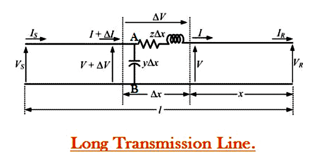

Long Transmission Line
A power transmission line with its effective length of around 250 Kms or above is referred to as a long transmission line. Calculations related to circuit parameters (ABCD parameters) of such a power transmission is not that simple, as was the case for a short transmission line or medium transmission line. The reason being that, the effective circuit length in this case is much higher than what it was for the former models (long and medium line) and, thus ruling out the approximations considered there like.

a) Ignoring the shunt admittance of the network, like in a small transmission line model.
b) Considering the circuit impedance and admittance to be lumped and concentrated at a point as was the case for the medium line model.
Rather, for all practical reasons we should consider the circuit impedance and admittance to be distributed over the entire circuit length as shown in the figure below.
The calculations of circuit parameters for this reason is going to be slightly more rigorous as we will see here. For accurate modeling to determine circuit parameters let us consider the circuit of the long transmission line as shown in the diagram below.
Here a line of length l > 250km is supplied with a sending end voltage and electric current of VS and IS respectively, where as the VR and IR are the values of voltage and electric current obtained from the receiving end. Lets us now consider an element of infinitely small length Δx at a distance x from the receiving end as shown in the figure where.
V = value of voltage just before entering the element Δx.
I = value of electric current just before entering the element Δx.
V+ΔV = voltage leaving the element Δx.
I+ΔI = electric current leaving the element Δx.
ΔV = voltage drop across element Δx.
zΔx = series impedence of element Δx
yΔx = shunt admittance of element Δx
Where Z = z l and Y = y l are the values of total impedance and admittance of the long transmission line.
Therefore, the voltage drop across the infinitely small element Δx is given by

 ..............(1)
..............(1)
Now to determine the electric current ΔI, we apply KCL to node A.
ΔI = (V+ΔV)yΔx = V yΔx + ΔV yΔx
Since the term ΔV yΔx is the product of 2 infinitely small values, we can ignore it for the sake of easier calculation.
 by
by